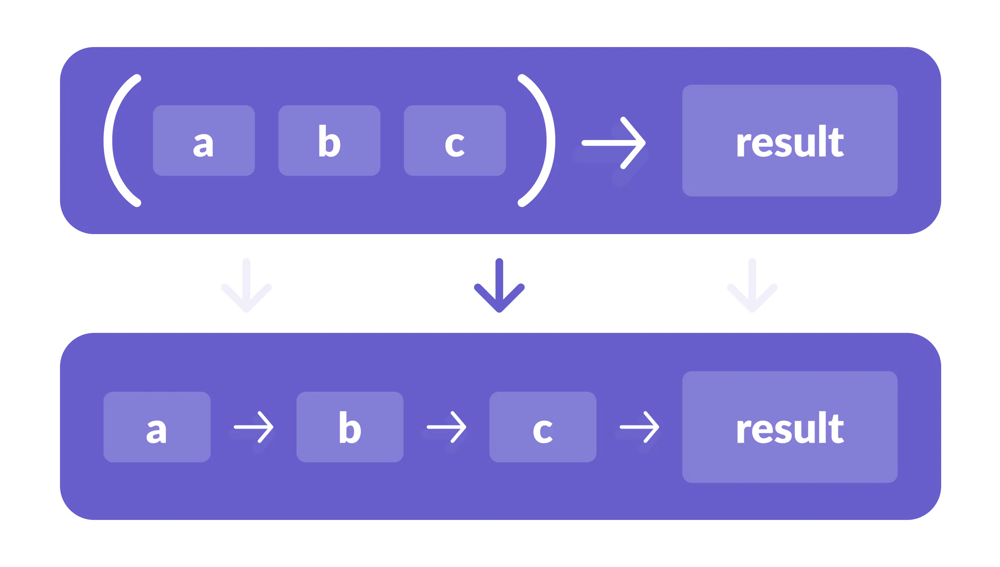
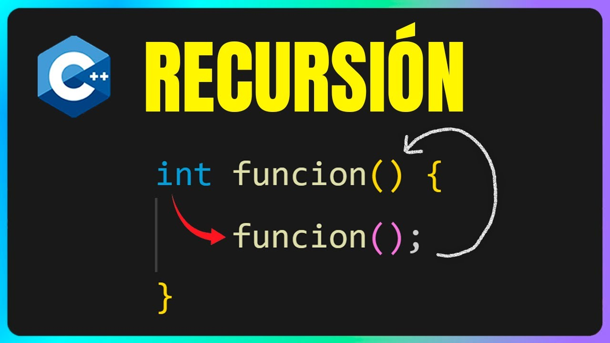
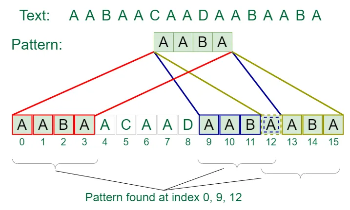
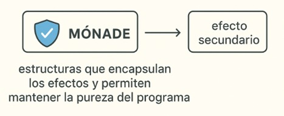

Objetivo del Proyecto
El propósito de este trabajo es comprender los principios fundamentales de los lenguajes de programación, así como identificar sus principales características, paradigmas y usos dentro del desarrollo de software moderno.
Introducción
En la actualidad, la programación se ha convertido en una de las herramientas más importantes para el desarrollo tecnológico y científico. Existen diferentes paradigmas de programación, los cuales representan distintas formas de pensar y resolver problemas a través del código. Entre ellos, uno de los más relevantes y a la vez menos comprendidos es la programación funcional, una metodología que tiene sus bases en la lógica y en las matemáticas, y que busca escribir programas más limpios, claros y eficientes.
Los programas funcionales se caracterizan por centrarse en el uso de funciones como unidades fundamentales de construcción, evitando en lo posible los cambios de estado y los efectos secundarios que suelen presentarse en otros paradigmas, como el imperativo u orientado a objetos.
Características principales:
- Funciones puras: Son funciones que, para una misma entrada, siempre devuelven la misma salida y no tienen efectos secundarios (como modificar variables externas o imprimir datos).
- Datos inmutables: Los datos no pueden ser modificados una vez creados. Si se necesita una versión modificada, se crea una nueva copia y se conserva el original.
- Enfoque declarativo: Se describe "qué" se quiere obtener en lugar de "cómo" hacerlo paso a paso.
- Transparencia referencial: Una expresión puede ser reemplazada por su valor sin cambiar el comportamiento del programa.
- Evita efectos secundarios: Al no alterar el estado del programa, se reducen errores y se facilita la concurrencia.
El paradigma funcional tiene su origen en los fundamentos de la lógica matemática y el cálculo lambda, una teoría formal creada por Alonzo Church en la década de 1930. Este modelo matemático permitió representar funciones y su aplicación a argumentos, sentando las bases de lo que más tarde se convertiría en la programación funcional moderna. A diferencia de la programación imperativa, donde las instrucciones se ejecutan una tras otra modificando el estado del programa, en la programación funcional se busca describir las relaciones entre los datos y las operaciones que se realizan sobre ellos, sin alterar su valor original. Esta característica hace que los programas funcionales sean más predecibles, confiables y fáciles de depurar.
En los programas funcionales, las funciones son tratadas como "ciudadanos de primera clase", lo que significa que pueden asignarse a variables, pasarse como parámetros y devolverse como resultados de otras funciones. Esto permite crear programas modulares y reutilizables, donde las funciones pueden combinarse entre sí para formar soluciones más complejas. Además, la programación funcional fomenta el uso de funciones puras, es decir, funciones que siempre devuelven el mismo resultado cuando se les da la misma entrada y que no producen efectos secundarios, como modificar variables externas o interactuar con el entorno. Esta pureza funcional mejora la fiabilidad del software y facilita la implementación de procesos paralelos y concurrentes, algo muy importante en los sistemas modernos que necesitan alta eficiencia y rendimiento.
Beneficios:
- Facilita la validación y depuración del código.
- Mayor predictibilidad y seguridad.
- Código más modular y mantenible.
Desarrollo
El concepto de programación funcional se originó en los años 1930 con el cálculo lambda, una formalización matemática creada por Alonzo Church. Este paradigma influyó en lenguajes como Lisp, Haskell y Scala.
Elementos técnicos y características avanzadas:
Funciones de Orden Superior
Permiten usar funciones como datos. Es decir, se pueden pasar como parámetros o devolver como resultados.
- Map: Transforma cada elemento de una lista.
- Filter: Filtra elementos que cumplan una condición.
- Reduce: Combina todos los elementos en un solo resultado.
Currying
Consiste en descomponer una función que toma varios parámetros en una secuencia de funciones que toman uno solo. Permite crear funciones especializadas.
Recursividad
Se usa en lugar de bucles. Una función se llama a sí misma para resolver un problema en partes más pequeñas.
Pattern Matching
Permite que un programa decida qué hacer basado en la estructura de los datos. Es una forma más clara y concisa de manejar diferentes casos.
Manejo de efectos secundarios
En programación funcional pura, las funciones no deben tener efectos secundarios. Para esto se usan mónadas, que son estructuras que encapsulan los efectos y permiten mantener la pureza del programa.
Aplicaciones prácticas
La programación funcional se utiliza en sistemas expertos, razonamiento artificial, procesamiento de lenguaje natural y verificación formal de software. Gracias a su base matemática y naturaleza declarativa, facilita el desarrollo de sistemas confiables y predecibles.
Lenguajes en la Programación Funcional
Comparación con otros paradigmas
- Programación imperativa: Describe cómo ejecutar instrucciones paso a paso y modifica estados internos.
- Programación lógica: Usa reglas y hechos para deducir resultados; la funcional usa funciones matemáticas.
- Programación orientada a objetos: Se centra en clases y objetos con estado; la funcional evita el estado mutable y usa funciones puras.
Ventajas
- Código más claro y predecible.
- Menos errores y mayor facilidad de depuración.
- Facilita la programación paralela y concurrente.
- Alta reutilización de código.
- Facilidad para razonar sobre el comportamiento del programa.
Desventajas
- Curva de aprendizaje elevada.
- Menor eficiencia en algunos casos.
- No es ideal para tareas dependientes del estado o del hardware.
- Disponibilidad limitada de programadores y librerías específicas.
Conclusiones
Más que una simple técnica de programación, el paradigma funcional representa una forma diferente de pensar sobre la resolución de problemas. Su adopción gradual en lenguajes multiparadigma evidencia su valor práctico, mientras que lenguajes puramente funcionales continúan demostrando su potencia en dominios específicos. El futuro del desarrollo software parece dirigirse hacia una integración armónica de paradigmas, donde los principios funcionales -especialmente la inmutabilidad y la composición- jugarán un papel cada vez más importante en la creación de sistemas robustos, mantenibles y escalables.